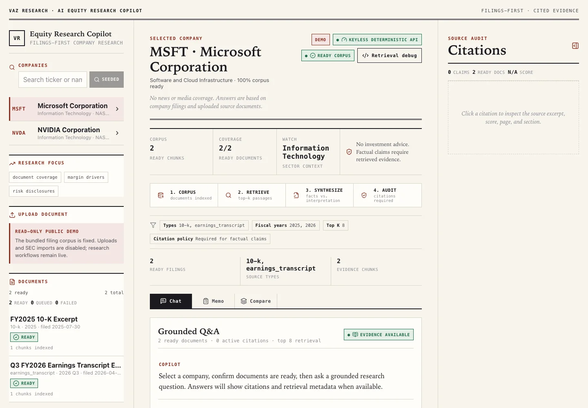
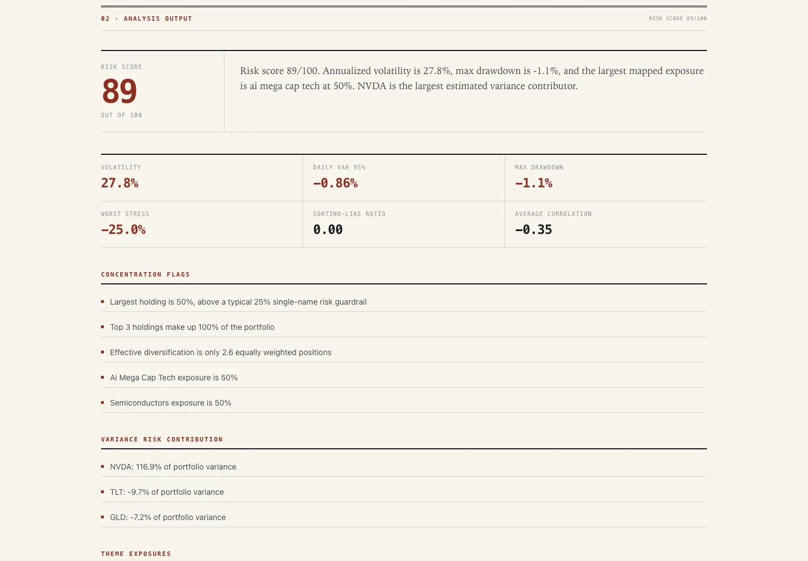
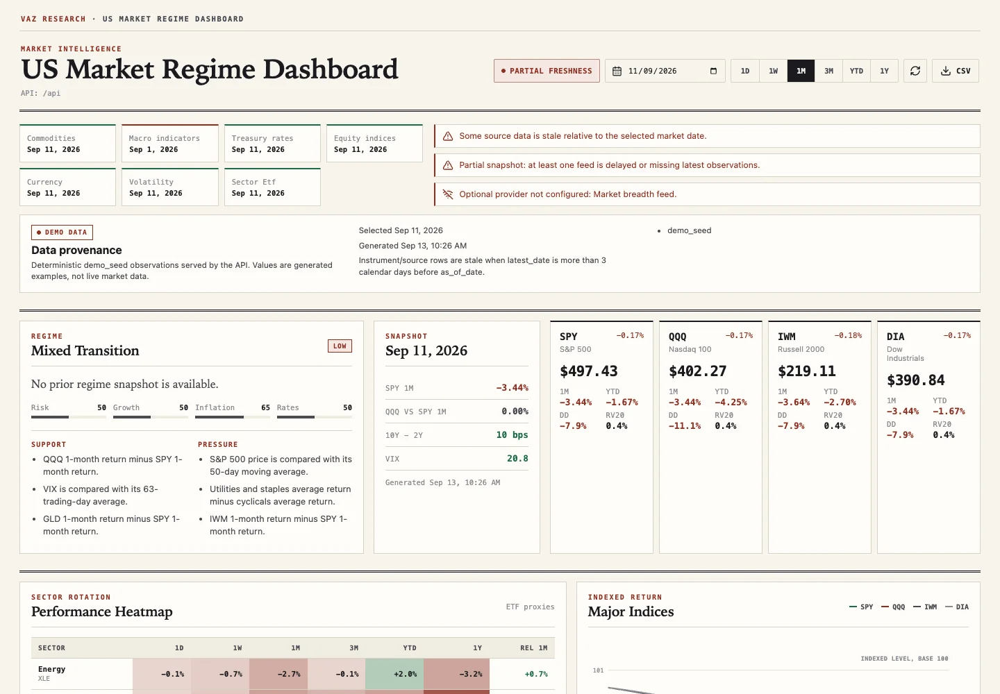
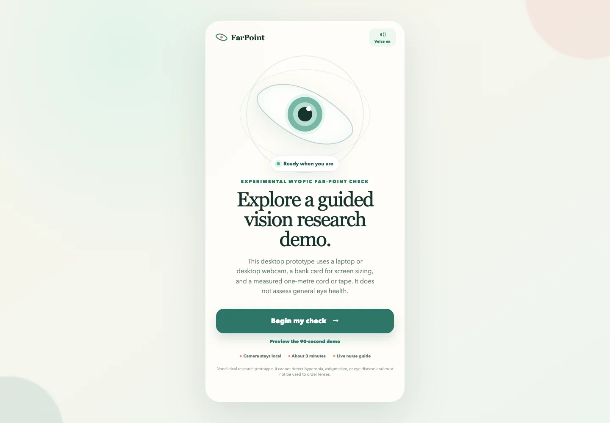
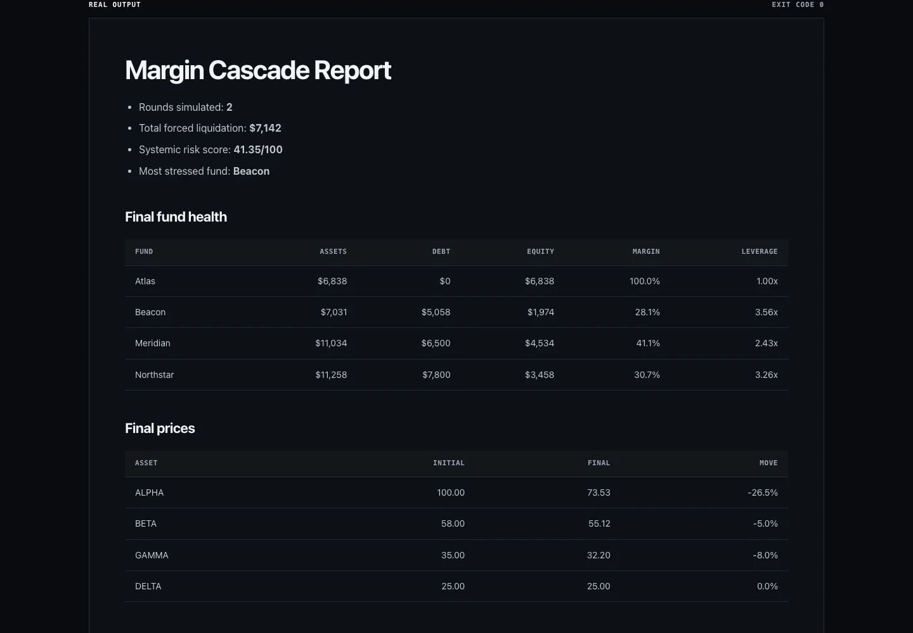
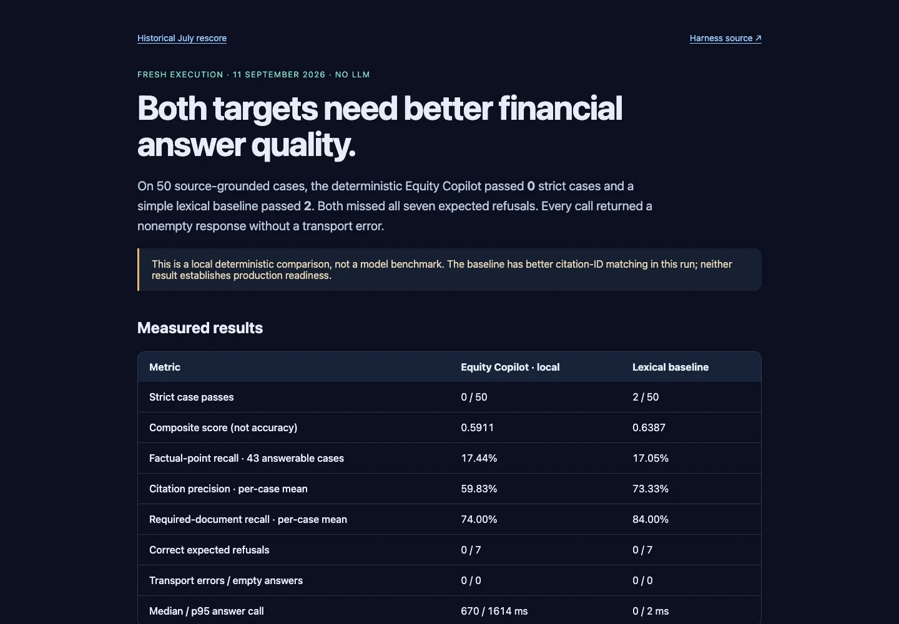

Interactive demo

AI Equity Research Copilot
Ask a question about company filings. Follow the answer back to the evidence behind it.
Software, AI & a little curiosity
I’m Johan, a computer science + quantitative finance student at NUS. I build AI tools, explore financial systems, and make useful things for the web.
The best introduction is a working demo.
Explore my work01 / The work
Real previews. Direct links.
Try a demo or explore the results.

Ask a question about company filings. Follow the answer back to the evidence behind it.

Explore portfolio risk, correlations, and stress scenarios, with commentary that explains the numbers.

Explore macro signals and market regimes through transparent rules, charts, and data-freshness checks.

A webcam-guided prototype for exploring myopic far-point measurement. A research experiment, not a clinical eye test.

Small experiments in financial risk: margin cascades, liquidity stress, factor crowding, and more. Browse the outputs.

Inspect financial QA tests, evidence checks, and failure cases. The published run compares deterministic systems, without an LLM.
Smaller tools and early experiments, also online.
A prototype for accounts, subscriptions, and feature access, backed by Postgres. Billing sync is still a work in progress.
Open AccounterConvert audio to MP3 or WAV in your browser. Preview the result, then download it. Your files stay on your device.
Open the converter02 / Behind the builds
Narrated, with optional captions.
Recorded locally using scripted model responses.
Learn by teaching an AI novice.
Language practice with adaptive lessons.
Follow a usability test from task to change request.
The voiceover explains the recorded workflow. It is separate from each app’s own voice features.
03 / The person behind the projects
Singapore · National University of Singapore
I’m studying computer science and quantitative finance at NUS. My projects sit between the two, with a few detours into language learning, computer vision, and everyday tools.
I’m interested in AI engineering, fintech, and research tooling. If you’re building in these areas, I’d love to hear about it.
Let’s talk v.johan2234@gmail.com